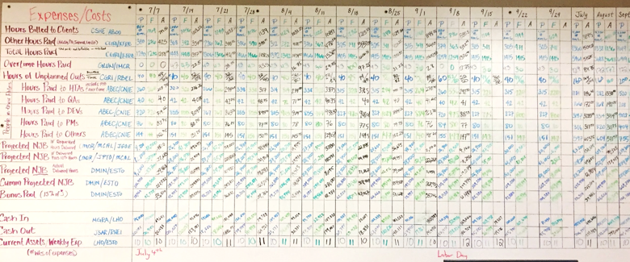
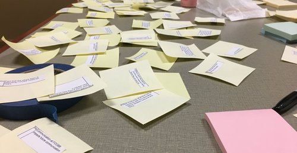
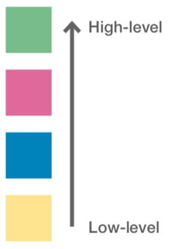
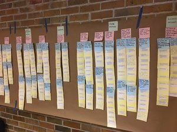

As part of the SI 501: Contextual Inquiry & Consulting course, our graduate student team conducted a contextual inquiry
for Menlo Innovations, a software and management consultancy. We completed 1:1 interviews, affinity walls, and data
analysis to meet the following objectives:
understand how employees used a physical financial metrics board
inform recommendations for an optimized financial metrics board
Menlo Innovations asked us to optimize the way financial metrics are communicated and presented to employees to maximize employee engagement and possibly improve employee productive and work.
Background
Menlo Innovations utilizes Open Book Management and currently displays financial metrics on a whiteboard (called "Front
Office Open Book Board" or FOOBB) in an open meeting room. With OBM, management hopes employees will become more
engaged in their work and adopt efficient, economic-based decisions when completing work. Menlo Innovations held
weekly, company-wide meetings to discuss the financial metrics together. While employees grasp the definitions of some
line items on the boards, few are able to connect associated metrics to form a holistic understanding of the company’s
overall financial health. As a result, employees may not be performing as effectively as they could be.
THE CHALLENGE
Select one concept for each of the 3 tested features to move forward with.

The Problem
Upper management felt that the FOOBB (financial metrics) board could be improved and optimized for employees. Employees
may have been having difficulty interpreting financials on the board due to the way it presents information or more
personal challenges specific to the employees.
Our goal was to understand the context of the board's use, uncover any difficulties employees were having in their
interactions with the board, and highlight areas for improving the way Open Book Management is implemented at Menlo.
We sat down with Menlo Innovations for a deep dive into its organization structure and its application of Open Book
Management. We clearly defined the project’s scope and identified responsibilities for both the research and client
teams. After our initial client meeting, we sat in on a weekly financial metrics meeting to gauge the general dynamic
as well as employee understanding, morale, and engagement
2. Participants
As outlined by the client, the intended users of the financial metrics board were upper management and the following
roles:
Project Managers
Software Developers
Quality Advocates
High-Tech Anthropologist
3. Interviews
Interviews were conducted with end users (employees) in a meeting space at Menlo Innovations. Interviews were conducted
as one-on-one, 60- to 90-minute in-depth discussions.
Our goal for conducting the interviews was to answer these overarching questions:
How do employees understand the financial metrics board and Menlo’s overall financial status?
How can the weekly financial meetings be optimized?
How does their understanding of the financial metrics impact their work?
Are there gaps between management's expectations and how employees behave?
What metrics do they find valuable that should be better understood by other employees?
Interview Structure
(a) Intro & Background
welcomed participant
provided session overview
discussed financial understanding
discussed initial impressions of the metrics board
(b) Weekly Meetings
participant gave detailed account of the last meeting
(c) Financial Understanding
participant discussed understanding of the financial big picture
participant asked to explain associations between different metrics
(d) Wrap-up
asked follow-up questions
thanked the participant
4. Analysis
INTERPRETATION SESSIONS
After each interview, the team sat down and listened to the interview recording, highlighting notable comments and findings.
AFFINITY DIAGRAMMING
400+ key comments and quotes from interviews were attached to sticky notes:
Notes were clustered with 5-6 other relevant comments/quotes. Clusters were then grouped (and so on) to form a hierarchy of granular patterns moving upwards to high-level themes.



We constructed the following themes:
Presentation of Data
Employee's Individual Differences
Lack of Understanding & Direction
Constraints
FOOBB Methods
Business Methods
5. Findings
Analysis gave way to the following findings:
Positives
employees understand FOOBB much better when coworkers share the "why" behind the metrics
employees use certain metrics like Billable Hours as markers for Menlo's financial health
Project Managers often have an easier time understanding metrics and the bigger picture than other employees
a majority want to understand FOOBB better
some employees use FOOBB to inform their personal finances
employees find pairing with a coworker to be valuable
Issues
We uncovered high-level issues with FOOBB and Menlo's implementation of Open Book Management:
connections are hard to make on the board
info on the board is not easily digestible
the board is not conducive to visual learning
a) PRESENTATION OF DATA
b) ACCOUNTING FOR EMPLOYEE DIVERSITY
the board does not account for individual preferences
employees without management experience struggle
those less familiar with the flow of business were more pessimistic about Menlo's financial health
c) UNCLEAR EXPECTATIONS
employees are expected to invest emotionally
management expects employees to spend extra time using metrics to improve the business
employees are busy with client work
d) VALUE OF WEEKLY MEETINGS
employees wished less time was spent calculating
employees want to make proactive decisions
the story behind the metric is imperative to teaching
e) INEFFICIENT QUARTER TRANSITIONS
new quarters = new metrics to learn, wastes time
researching new metrics does not follow a process
6. Recommendations
We brainstormed and potential solutions that Menlo could use to improve the way employees interact with Open Book Management and the giant whiteboard.
To narrow our solutions, we evaluated them against the following qualities:
political support among upper management
political support among employees
simplicity
degree to which the problem is solved
financial cost
required effort
technical feasibility
Prioritizing and down-selecting the solutions left the following as our top recommendations for the client:
Train employees on Open Book Management
align the team on the value of OBM
onboard newer employees and those who struggle with FOOBB
pair a learner with a mentor to ensure constant learning and efficiency
educate employees on the nature of business and consulting
Make creating the "story" easy
consider creating 'mad-libs' to allow employees to plug-n-present the story
devise tips for researching, analyzing, and presenting different metrics
Clearly communicate expectations
spend time in the weekly meeting reinforcing employee expectations
bridge the gap between expectations and reality
discuss ways to work around the time required for billable work
ensure employees do not feel guilty when spending time on FOOBB
Visualize data to show connections
consider creating graphs connecting metrics to be updated weekly
group related metrics adjacent or near each other to promote connections
Implement a feedback system
encourage employees to provide feedback for a given financial decision
ensure employees feel heard and prioritized within the business model
Optimize meeting quality
use weekly meetings to analyze metrics and discuss proactive solutions
spend less time number-crunching and more time thinking analytically
consider deciding next week's meeting topic in this week's meeting
use the end of quarters to devise research approaches for new metrics
Reflection
What did I learn?
Ethnography is not Usability:
contextual inquiry should be much less directed than a typical usability session with a very flexible interview protocol
Interviews with stakeholders can be just as valuable:
interviewing the CEO highlighted unmet expectations that had not been communicated to the team
What would I do differently?
Conduct interviews in the same environment as observation:
keep participants thinking in-context so they provide relevant answers and recollect nuances they might otherwise forget
Brainstorm ways to increase employee buy-in:
regardless of how great a product is, users must want to use it, so increasing buy-in and retention could have helped this system